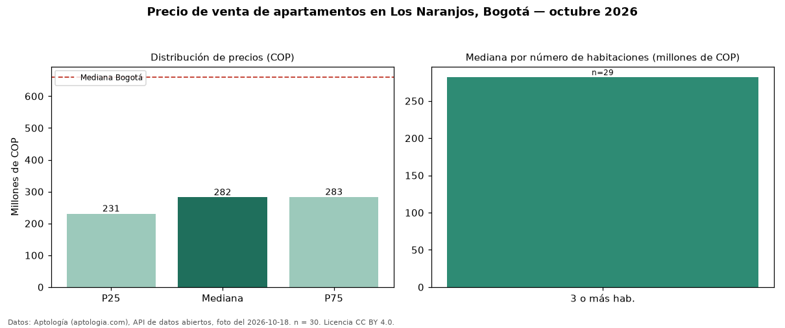

Precio de venta de apartamentos en Los Naranjos, Bogotá — octubre 2026
En Los Naranjos (localidad de Suba), Bogotá, la mediana de precio de venta de apartamentos es COP 282 millones, según 30 avisos vigentes. Comparado con la mediana de la ciudad, COP 660 millones, la diferencia es de 57 % por debajo. El segmento con más oferta es el de 3 o más habitaciones (29 avisos, mediana COP 282 millones). Por mediana, es el puesto 227 de 290 barrios de Bogotá con al menos 30 avisos de apartamentos en venta: en la franja media. 23 % de los avisos incluye parqueadero. El aviso más barato pide COP 212 millones y el más caro COP 2,40 mil millones. 80 % de los anunciantes publica un teléfono de contacto. Datos: Aptología (aptologia.com), API de datos abiertos, licencia CC BY 4.0 — https://www.aptologia.com/venta/bogota/los-naranjos. Archivos: PDF de 2 páginas, CSV con las cifras y gráfica PNG.

| Avisos únicos | 30 |
|---|---|
| Percentil 25 | COP 230.718.750 |
| Mediana | COP 282.000.000 |
| Percentil 75 | COP 283.000.000 |
Fuente: avisos vigentes de portales inmobiliarios recopilados por Aptología, deduplicados (mínimo 30 avisos únicos por celda). Precios pedidos, no cerrados. Fecha: 2026-10-18.